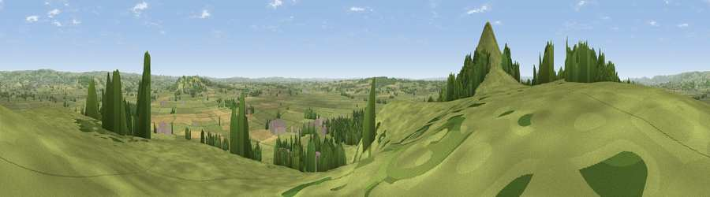

Viewpoint near Glastonbury
#10642 in England · top 23% of its area beats it · near GlastonburyThe view, rendered

A 360° render of this exact spot computed from the terrain model, tree cover and land cover — summer colours, afternoon light, calibrated against photographs of famous viewpoints. Real trees, hedges and buildings will differ in detail.
The panorama
Grey silhouette: terrain skyline in each direction (720 bearings, Earth curvature and refraction included). Dashed green: skyline with trees (+15 m) and buildings (+8 m) as obstacles. Blue strip: how far the ground is visible on each bearing.
Where the view opens
Wedge length = distance to the farthest visible ground on that bearing (vegetation-aware). Rings at 10, 25 and 50 km.
What fills the view
73% grassland · 14% woodland · 11% cropland · 2% built-up
Angular shares of the visible panorama (visual magnitude), not map area. Landscape diversity 0.36 (0–1 Shannon).
Key numbers
More beautiful places nearby
The staircase of upgrades: each row has a higher view potential than everything closer. Driving times are estimates from straight-line distance, calibrated against real road routing — check an actual route before setting out.
| Place | Direction | Drive | Score |
|---|---|---|---|
| Glastonbury Tor | WSW · 1 km | ~2 min | 75.8 |
| Socombe Hill | W · 13 km | ~24 min | 76.4 |
| Viewpoint near Lamyatt | E · 15 km | ~27 min | 77.8 |
| Beacon Batch | N · 19 km | ~32 min | 79.4 |
| Bleadon Hill [Loxton Hill] | NW · 24 km | ~39 min | 79.6 |
| Cothelstone Hill | WSW · 33 km | ~51 min | 82.1 |
| Viewpoint near West Bagborough | W · 34 km | ~52 min | 84.3 |
| Wills Neck | W · 35 km | ~54 min | 85.7 |
51.14664, -2.69152 · source: screening · position refined by local search. Computed location — check access rights before visiting.